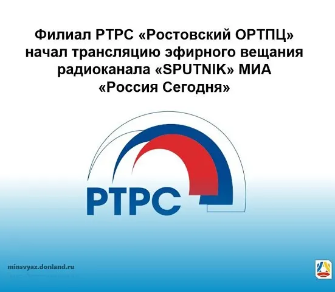
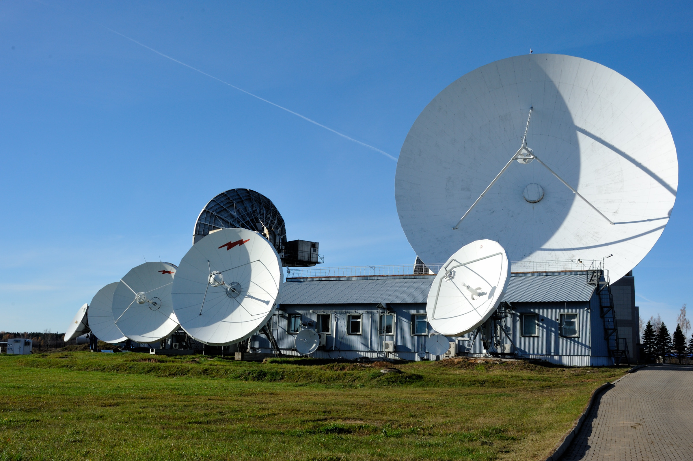

Новостная лента
-
Четверг, 30 Апрель 2025
Администрация Ростовской ОРТПЦ поздравляет всех граждан с наступающим 1 Мая!
-
Пятница, 15 Ноября 2024
РТРС «Ростовский ОРТПЦ» начал трансляцию эфирного вещания радиоканала «SPUTNIK» МИА «Россия Сегодня»
Передачи радиостанции «SPUTNIK» транслируются на частоте 99,2МГц. Сигнал радиостанции «SPUTNIK» будет доступен жителям г. Ростова-на-Дону, г. Батайска, г. Новочеркасска, г. Азова, а также населенных пунктов Азовского, Аксайского, Мясниковского, Неклиновского и Родионово-Несветайского районов Ростовской области, а это более чем 1 485,800 тысячам человек.

-
Четверг, 17 Июля 2024
Оператором связи ФГУП «РТРС» «Ростовский ОРТПЦ» введен в эксплуатацию фрагмент сети электросвязи в г. Волгодонск Ростовской области»
Управлением Роскомнадзора по Ростовской области принято участие в комиссии по вводу в эксплуатацию сети электросвязи (фрагмента сети электросвязи) филиала ФГУП «РТРС» «Ростовский ОРТПЦ» «Фрагмент сети электросвязи для организации вещания пакета программ «РТРС-1» и «РТРС-2» в цехе г. Волгодонск Ростовской области».
